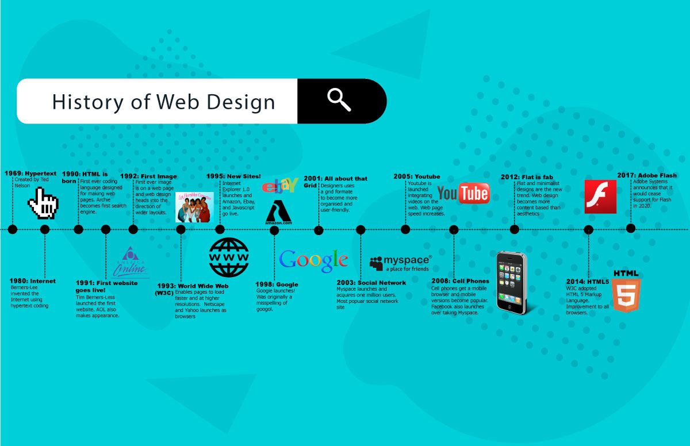

Early Days of Web Design
"The web is more a social creation than a technical one. I designed it for a social effect - to help people work together." - Tim Berners-Lee

The early days of web design were characterized by simple, text-based websites with minimal styling. Tim Berners-Lee, the inventor of the World Wide Web, created the first website in 1991, which provided information about the World Wide Web project.
The Dot-com Era
During the late 1990s, the dot-com boom led to a surge in web development. Websites became more visually appealing with the introduction of images, tables, and Flash animations. Companies were eager to establish an online presence, resulting in a rapid evolution of web design practices.
Layer 1
Layer 2
Layer 3
The Modern Web
Responsive Design
HTML5 & CSS3
JavaScript Frameworks
Mobile First (Hover to it)
Modern web design embraces user experience and accessibility.